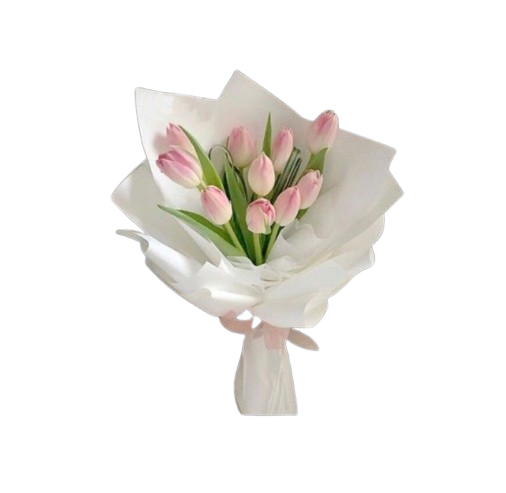
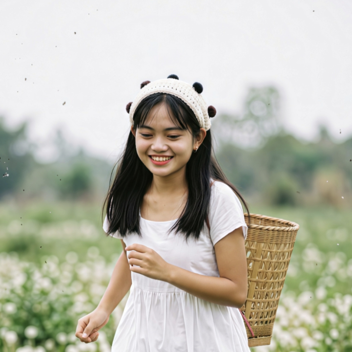
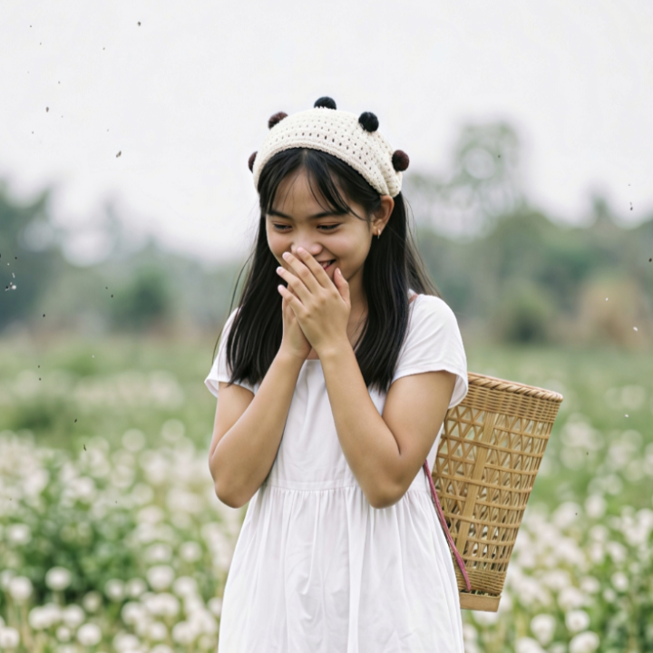
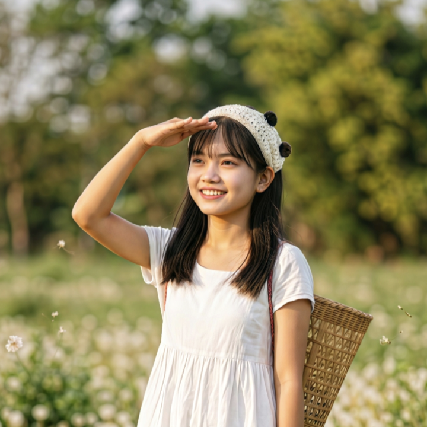

Happy Valentine's Day

It is said that swans mate for life, remaining partnered and devoted to each other from adolescence until death. There are many swans in the Cowichan Valley. I’ve seen lamentations of swans spread out over fields and I’ve seen wedges of them flying overhead, but there are two swans that stay in the Cowichan Bay area, right in front of our house. I don’t see them every day, but often enough, the sight of their elegant, bright white shapes, always traveling close together catches either my or my daughter E’s eye. They glide at a steady pace, placid, at ease. I have never seen a swan in a rush. I think it could be anthropomorphically suggested that there is a great deal of love flowing between those two long-necked strangely graceful creatures as they live out their lives.




Thank you for being my constant support, my favorite distraction, and my absolute best friend. You bring a warmth and joy into my life that I never knew I was missing. Whether we are sharing a quiet moment together, laughing until our stomachs hurt, or navigating life's challenges side by side, everything is better because I am with you.You inspire me to be a better person just by being yourself. Thank you for your kindness, your patience, and the beautiful way you care for us.I love you more than words can properly say, and I am so grateful to share this life with you.